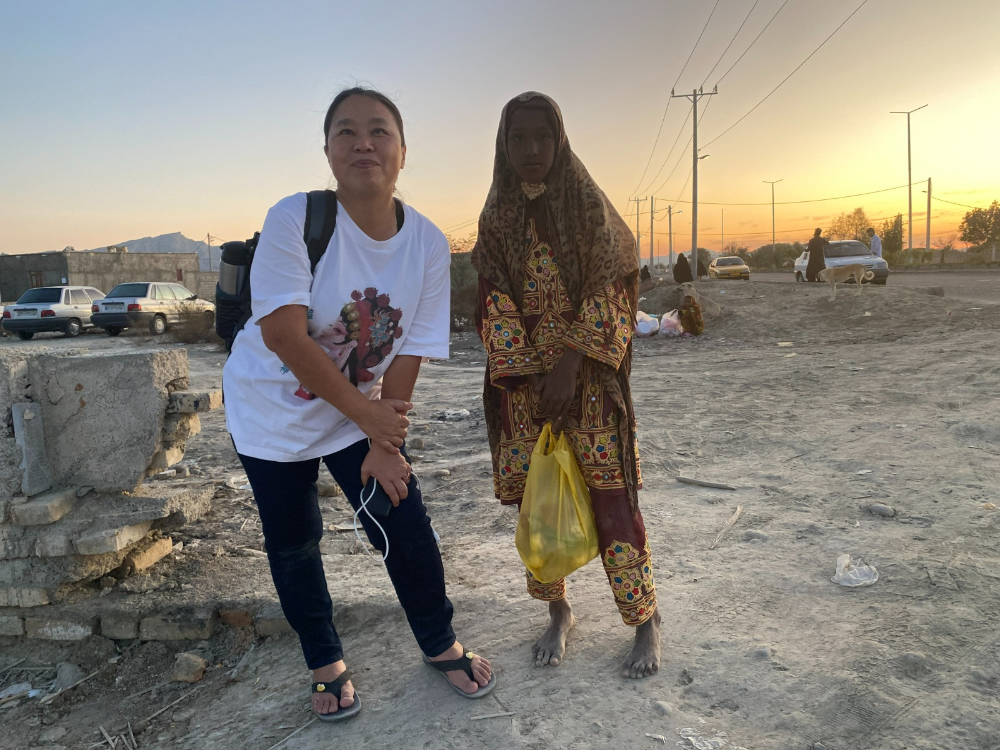

Real Story · 中文
他不是只办夜市。他是在帮一个地方长出自己的经济循环。
Yesra 的亲戚 Mohsen Rahmat Poor 是一个很聪明、很有行动力的人。 他向 local authority 租下不同地点的空地，再提供最基本的设施： 水、电、摊位空间、夜间活动的秩序。
这样一来，farmer、fisherman、trader 不需要自己开店， 也不一定要跑去 Chabahar city 才能做生意。 在不同的日子，不同地点会形成 night market。 人来了，货来了，食物来了，灯亮了，一个地方的经济就开始流动。
Mohsen 知道我是 vlogger，就邀请我一起去看他每天巡不同 night market。 对我来说，这很特别。 因为在 long-term sanctions 之下，外人常常只看到限制， 但在这里，我看到的是 people still producing: vegetables, local goods, food, small products, trade, and community energy.
这不是豪华商业区。 这是一个地方自己想办法活起来。
Observation
A rotating market ecosystem.
Mohsen’s model was simple but powerful: instead of asking every small seller to carry the cost of a permanent shop, he created rotating market spaces where local sellers could appear on the right day, in the right place, with basic shared infrastructure.
Farmers could bring produce. Fishermen could sell seafood. Traders could bring household goods and local products. Families could come out at night. The market became both commerce and community.
Beyond Commerce
Using local attractions to create movement.
Mohsen’s idea was not limited to buying and selling. He also understood that local attractions could bring movement into the area: people come for a place, then they buy food, talk, trade, and stay longer.
In this way, tourism, local products, markets, and community life became connected. It was a small-scale development logic created from inside the community.
Local Encounter
A Photo, Nothing More.
While Tuzi was recording Mohsen’s local economy work, a young local woman waited patiently nearby. Her wish was simple: to take one photo together. She was not asking for anything else — only that small, quiet moment of connection.

English Memory Summary
Local economy under pressure, local intelligence in motion.
During Tuzi’s stay with her Iran family, Mohsen Rahmat Poor invited her to join his visits to rotating night markets around the Dashtyari / Chabahar region. He rented empty land at different locations, provided basic water and electricity, and created temporary market spaces on different days.
This allowed farmers, fishermen, and small traders to do business without opening permanent shops or travelling all the way to the city. The markets also connected with local attractions, creating a wider business environment for nearby communities.
For Tuzi, this was an important view of Iran: even under long-term sanctions and limitations, local people were still producing vegetables, goods, food, and small products — building practical systems with what they had.
Heart Statement
有些市场不是从资本开始，而是从一块空地、一盏灯、和一个人愿意组织开始。
Mohsen did not wait for a perfect city to arrive. He made a place where trade, people, and hope could gather first.